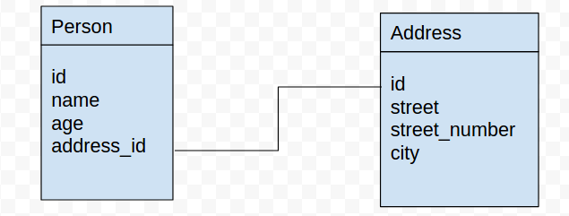

Introduction to programming using Python
Session 11
Matthieu Choplin
Objectives
- SQL usage and syntax
Definition
SQL (Structured Query Language) is a language for managing data held in a relational database management system (RDBMS).
Tools
SQLite is an example of an RDMS
We are going to use a SQLite client, install it from http://sqlitebrowser.org/
Download the database file example_db and open it with SQLite browser
Operations we can do in SQLite browser
Open the SQLite browser and do the following:
- Creating a database
- Creating a table
- Creating fields for our table
- Adding records to the table
Joining table
You can link records of different tables using a "foreign key"
A foreign key is a field in one table that uniquely identifies a row of another table or the same table.
Creating a table in SQL
CREATE TABLE `person` (
`id` INTEGER NOT NULL PRIMARY KEY AUTOINCREMENT UNIQUE,
`name` TEXT NOT NULL,
`age` INTEGER,
`address_id` INTEGER,
FOREIGN KEY(`address_id`) REFERENCES `address`(`id`) on delete set null
);You can see the SQL generated by SQLite browser under the table creation window
Creating data
You can do it directly through the GUI (graphical user interface) in the tab "Browse Data", then "New Record"
The equivalent in SQL is:
INSERT INTO example
(field1, field2, field3)
VALUES
('test', 'N', NULL);Example:
INSERT INTO address
(street, street_number, city)
VALUES
('Linden Gardens', '77', 'London');Exercise: create a new person record
In the SQLite browser tool, navigate to the tab "Execute SQL" and create a new person record using an SQL query only.
Reading data
SELECT syntax:
SELECT column1, column2, ...
FROM table_name;Exercise: select all the persons' name
In the SQLite browser tool, navigate to the tab "Execute SQL" and write a query to select all the persons' name.
Filter the result with the WHERE clause
Syntax:
SELECT column1, column2, ...
FROM table_name
WHERE condition;Example:
SELECT * from address where city != 'London';Note: the * means "all" or "everything", so above we select all the fields of the table
Operators
| Operator | Description | Example |
|---|---|---|
= |
Equal to | Author='Alcott' |
<> |
Not equal to (many DBMSs accept != in addition to <>) |
Dept<>'Sales' |
> |
Greater than | Hire_Date>'2012-01-31' |
< |
Less than | Bonus< 50000.00 |
>= |
Greater than or equal | Dependents>= 2 |
<= |
Less than or equal | Rate<= 0.05 |
| BETWEEN | Between an inclusive range | Cost BETWEEN 100.00AND 500.00 |
| LIKE | Match a character pattern | First_Name LIKE 'Will%' |
| IN | Equal to one of multiple possible values | DeptCode IN (101, 103, 209) |
| IS or ISNOT | Compare to null (missing data) | Address ISNOTNULL |
| ISNOTDISTINCTFROM | Is equal to value or both are nulls (missing data) | Debt ISNOTDISTINCTFROM-Receivables |
| AS | Used to change a field name when viewing results | SELECT employee AS 'department1' |
Updating data
You can modify existing records
Syntax:
UPDATE table_name
SET column1 = value1, column2 = value2, ...
WHERE condition;Example:
UPDATE person
SET age = 24
WHERE name='Matt';Exercise: increment the age of every person
Using an UPDATE statement, increment by 1 the age of every person in the database
Deleting data
You can delete all or specific records of a table.
Syntax:
DELETE FROM table_name
WHERE condition;Example:
DELETE FROM person
WHERE name='Matt';Exercise: delete the address with the street field starting with "L"
Hint: use the "WHERE" and "LIKE" keyword
More powerful SELECT using the join keyword
When the records of the tables are related with a foreign key, we can retrieve them at the same time by "joining" them
Join Syntax and Example
Syntax:
select *
from table1
join other_table2
on table1.foreign_key_to_other_table2=other_table2.id;Example:
select *
from person
join address on person.address_id=address.id
where name='Matt';Different types of join
- (INNER) JOIN: Returns records that have matching values in both tables

Different types of join
- LEFT (OUTER) JOIN: Return all records from the left table, and the matched records from the right table

Different types of join
- RIGHT (OUTER) JOIN: Return all records from the right table, and the matched records from the left table

Different types of join
- FULL (OUTER) JOIN: Return all records when there is a match in either left or right table